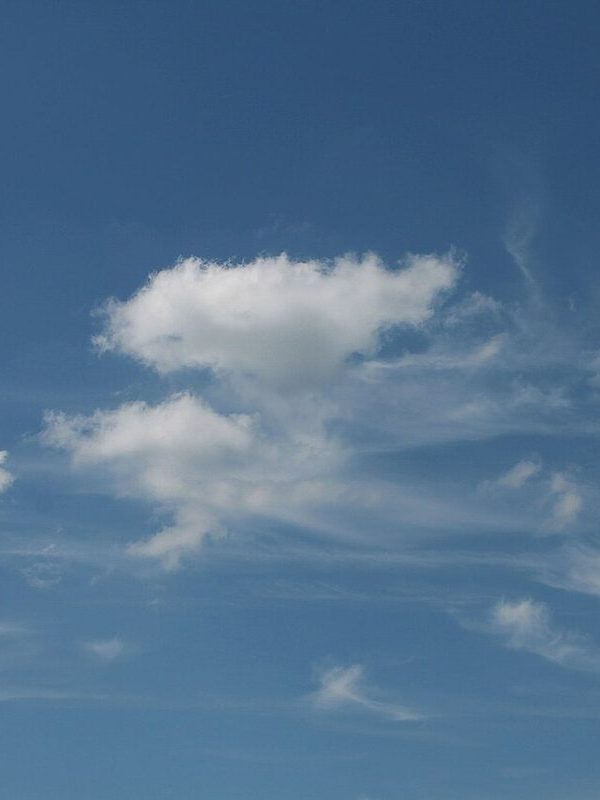
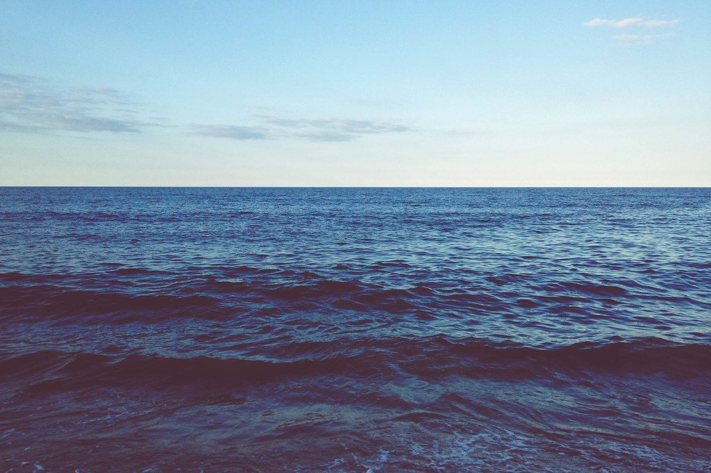
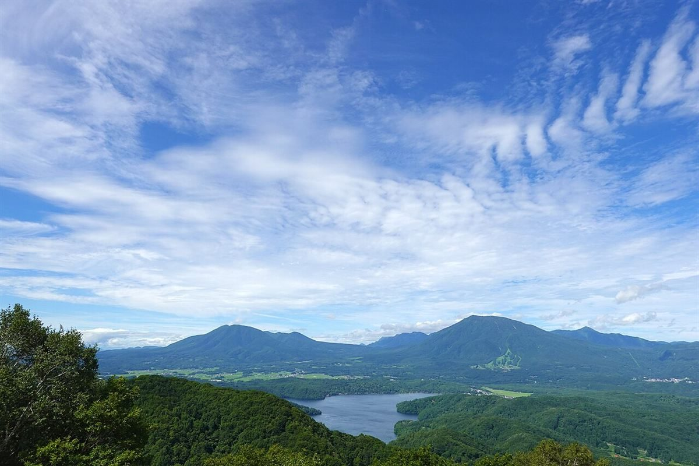

午後の空を、ゆっくり。
群馬県太田市東新町のカフェ

SHIMA SHIMA は、群馬県太田市東新町にあるカフェです。
営業時間やメニューなどの詳しい内容は、現在準備中です。
くわしくは、お電話またはInstagramでご案内します。


このサイトの案内
営業のご案内
- 営業時間
- 準備中(お問い合わせください)
- 定休日
- 準備中(お問い合わせください)
ご来店の前に、お電話でご確認ください。
掲載の写真はフリー素材のイメージ写真で、店舗の実際の様子ではありません。他の地域で撮影されたもの、撮影地が不明なものを含みます。